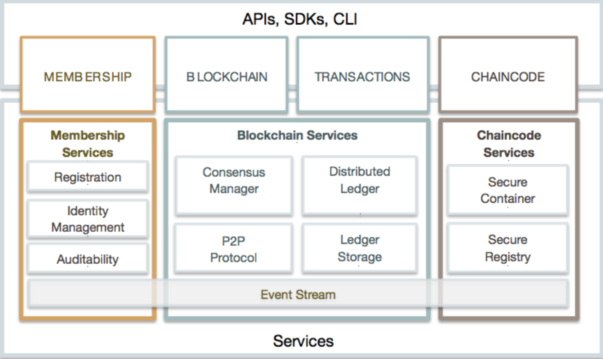
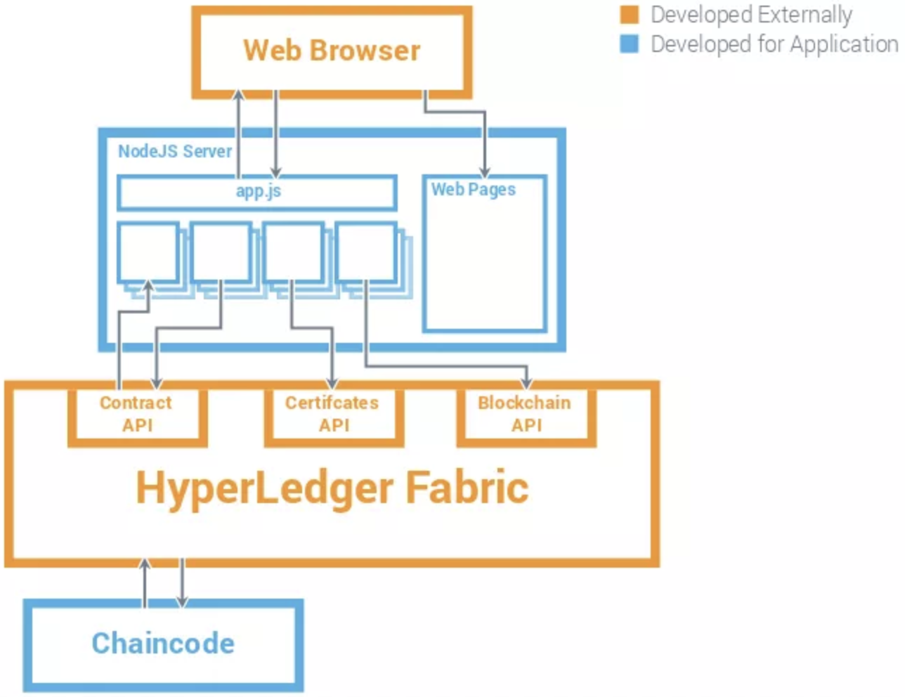
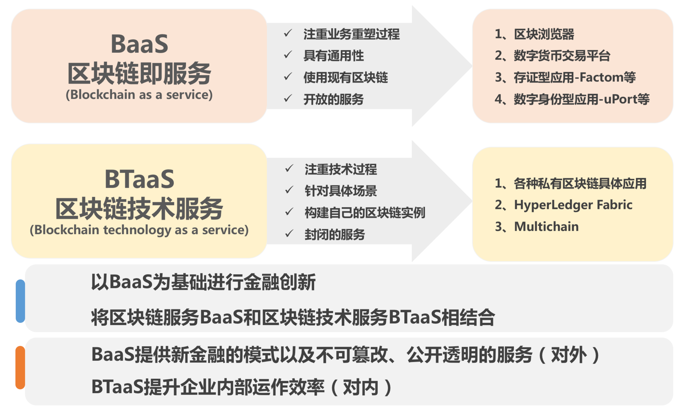

- 00 开篇词 帮你从0到1深入学习区块链技术.md.html
- 尾声篇 授人以鱼，不如授人以渔.md.html
- 新书首发《区块链第一课：深入浅出技术与应用》.md.html
- 第01讲 到底什么才是区块链？.md.html
- 第02讲 区块链到底是怎么运行的？.md.html
- 第03讲 浅说区块链共识机制.md.html
- 第04讲 区块链的应用类型.md.html
- 第05讲 如何理解数字货币？它与区块链又是什么样的关系？.md.html
- 第06讲 理解区块链之前，先上手体验一把数字货币.md.html
- 第07讲 区块链的常见误区.md.html
- 第08讲 最主流区块链项目有哪些？.md.html
- 第09讲 深入区块链技术（一）：技术基础.md.html
- 第10讲 深入区块链技术（二）：P2P网络.md.html
- 第11讲 深入区块链技术（三）：共识算法与分布式一致性算法.md.html
- 第12讲 深入区块链技术（四）：PoW共识.md.html
- 第13讲 深入区块链技术（五）：PoS共识机制.md.html
- 第14讲 深入区块链技术（六）：DPoS共识机制.md.html
- 第15讲 深入区块链技术（七）：哈希与加密算法.md.html
- 第16讲 深入区块链技术（八）： UTXO与普通账户模型.md.html
- 第17讲 去中心化与区块链交易性能.md.html
- 第18讲 智能合约与以太坊.md.html
- 第19讲 上手搭建一条自己的智能合约.md.html
- 第20讲 区块链项目详解：比特股BTS.md.html
- 第21讲 引人瞩目的区块链项目：EOS、IOTA、Cardano.md.html
- 第22讲 国内区块链项目技术一览.md.html
- 第23讲 联盟链和它的困境.md.html
- 第24讲 比特币专题（一）历史与货币.md.html
- 第25讲 比特币专题（二）：扩容之争、IFO与链上治理.md.html
- 第26讲 数字货币和数字资产.md.html
- 第27讲 弄懂数字货币交易平台（一）.md.html
- 第28讲 弄懂数字货币交易平台（二）.md.html
- 第29讲 互联网身份与区块链数字身份.md.html
- 第30讲 区块链即服务BaaS.md.html
- 第31讲 数字货币钱包服务.md.html
- 第32讲 区块链与供应链（一）.md.html
- 第33讲 区块链与供应链（二）.md.html
- 第34讲 从业区块链需要了解什么？.md.html
- 第35讲 搭建你的迷你区块链（设计篇 ）.md.html
- 第36讲 搭建你的迷你区块链（实践篇）.md.html
- 捐赠
第23讲 联盟链和它的困境
不知不觉我已经写到了深入区块链技术部分的最后一篇，今天我们就一起来聊聊联盟链。
其实，在2016年的时侯，联盟链是非常火热的，当时的公链还处于探索阶段，以太坊也不够成熟，这给了很多联盟链涌现的机会。所以说，从技术上来看，联盟链其实非常强劲，毫不逊色于著名的区块链项目，下面我们就一起来看看联盟链技术。
简介
联盟链源自于Vitalik对区块链的概念分类，是他第一次提出了联盟链的说法，联盟链的英文是Consortium Blockchain。
我们回顾一下联盟链。所谓联盟链，就是这个区块链具有准入许可，不像公链，任何人都可以随时进入，准入许可意味着候选节点进入区块链时需要得到已经在网络中的节点的许可。
所以联盟链也叫做许可链，也就是Permisson Chain，这个叫法在国外比较常见。联盟链的节点数通常不多，维护成本相比公链要低。
有关联盟链与公链的概念区别，它们的区别仅仅是看新加入的节点是否要经过全网中其他节点的许可，这决定了一个区块链是否开放，开放程度决定了项目生态的大小，这也是最直观的区别。
联盟链的技术框架很多，其中又以超级账本项目下的技术框架最为知名，应用也最为广泛，它基本代表了联盟链，所以，今天我们就重点来介绍一下超级账本项目。
超级账本HyperLedger
超级账本在2015年年底被发起，吸纳了众多重量级公司加入，它们包括大家耳熟能详的IBM、Intel、Accenture、日立、JP摩根、Digital Asset Holdings等公司。
超级账本的代码和组织结构都结构清晰、层次分明。可以说无论从声势还是实力上来说，它都可以完胜公链。
例如，超级账本组织是会员制的，加入超级账本需要缴纳一笔入会费，入会费决定了你的会员等级。再如，超级账本Frabric的架构设计简直就是教科书级别的，干净利落、模块清楚，几乎挑不出毛病。
超级账本由Linux基金会主持，宗旨是构建一个面向企业应用场景的开源分布式账本技术平台。
因为企业应用场景的多样性，所以超级账本包含了不只一个项目，它是由多个项目组成的。一共9个项目，其中5个是主要的技术框架，其他4个是辅助性工具。
它的主要技术框架分别是下面的5种。
1.Hyperledger Fabric ：没有中文名，暂译【纺布克】，是IBM提供的，超级账本第一个项目。 纺布克旨在用模块化架构作为开发区块链程序或解决方案的基础，允许一些组件——例如共识算法和成员管理变成即插即用的服务。
2.Hyperledger Sawtooth：中文名【锯齿湖】，Intel提供，是超级账本第二个项目。 锯齿湖是一个可以创建、部署和运行分布式账本的模块化平台，基于硬件依赖的PoET共识，可以面向大型分布式验证器群，同时也比较低功耗。
3.Hyperledger Iroha：没有中文名，暂译【伊路哈】，由Soramitsu提供。 伊路哈是为了将分布式账本技术简单容易地与基础架构型项目集成而设计的一个区块链框架。
4.Hyperledger Burrow：没有中文名，暂译【掘地者】，由Monax提供。 掘地者提供了一个模块化的区块链客户端，提供了权限管理的智能合约虚拟机，它部分建立在以太坊虚拟机（EVM）规范的基础上。
5.Hyperledger Indy：没有中文名，暂译【因迪】。 因迪是特别为去中心化的身份而建立的一种分布式账本。它提供了基于区块链或者其它分布式账本互操作来创建和使用独立数字身份的工具、代码库和可以重用的组件。
另外4个辅助性工具是：Cello、Composer、Explorer、Quilt，这四个辅助性工具可以对以上5个框架进行管理，例如Composer可以类比Docker中的Composer，Explorer就是区块浏览器。
我们不排除随着超级账本的发展，还有新的技术框架加入，当然，也可能存在既有的框架被市场淘汰。不过这些都不是本文的重点，所以我们不作过多介绍，你可以通过查阅超级账本官方网站获得更多内容。
1.纺布克Fabric
纺布克是由IBM提供的，它基于Go语言，前身是Openchain项目。在超级账本成立之初，Openchain的代码量就已经达到4万行了，随着项目的推进，项目成员对Openchian进行了重构，也就是我们看到的纺布克1.0版本。
纺布克提供了比较完备的模块化组件，如下图所示。

我们可以看到，它的架构上分成了：成员关系管理、区块链服务、Chaincode服务三个大模块。
成员关系管理相当于账户和权限管理系统，区块链服务提供了区块链一样的账本结构，Chaincode服务相当于智能合约。
成员关系管理是基于 PKI 的成员权限管理，平台可以对接入的节点和客户端的能力进行限制。
区块链服务提供一个分布式账本平台，多个交易被可以被打包进一个区块中，多个区块单向链接成一条区块链。区块链代表的是账本状态机发生变更的历史过程，这与公链区别不大。
Chaincode包含核心的业务处理逻辑，并对外提供接口，外部通过调用Chaincode接口来改变账本数据，在纺布克中，Chaincode是运行在隔离环境中的，也就是Docker。
纺布克的一个可能的工作模式如下图。

如果Chaincode运行在Docker中，我们按照经典的IT架构来分析，可以发现纺布克基本就是经典分布式系统的升级版，它可以提供宕机容错，可插拔的共识模块让用户自行选择是否需要拜占庭容错。
2.锯齿湖Sawtooth
锯齿湖也是一个高度模块化的区块链技术框架，它基于Python语言，1.0版本之后和纺布克一样，作为一套稳定的框架，它已经有了实际的应用了。
它是第一真正意义上提供拜占庭容错共识选项的超级账本项目，有以下四个特点。
- 链上治理：利用智能合约进行投票运营成员管理彼此之间的关系。
- 高级交易执行引擎：可以并行处理交易的创建和验证，性能可观。
- 支持以太坊智能合约：兼容了以太坊智能合约技术栈。
- 支持主流语言编写智能合约：编写智能合约不局限Solidity，可以是Go、Javascript、Python等语言。
相比以上四个特点，最引人注意的其实是锯齿湖提供了一个新的共识算法，叫做PoET（Proof of Elapsed Time），它的中文译作：时间流逝证明。
如果你熟悉Raft共识算法的话，我们知道Raft算法是一类强Leader的共识算法，选举Leader的时候，每个节点自己倒计时（CountDown），最先数完的那个成为候选人。
这个过程叫做超时选举（Election Timeout)。每个节点每轮选举中得到的倒计时时间是不同的，它的代码实现为随机产生，通常是150毫秒到300毫秒。
PoET与上述规则类似，只是倒计时时间的产生变更为硬件依赖的，这里的硬件目前是由英特尔提供的SGX，Software Guard Extensions，它可以提供可信的程序执行环境。
SGX提供了一种名为Enclave的机制，它支持两个函数“CreateTimer”和“CheckTimer”。CreateTimer用于从Enclave中产生一个计时器。
CheckTimer会去校验这个计时器是不是由Enclave产生并验证是否已经过期。如果满足这两个条件就给该节点开具一个证明，这个证明可以被其他节点验证，验证通过则表示同意该节点成为记账节点。
我们看出，PoET共识算法的拜占庭容错是由SGX保证的，具有一定的硬件依赖。
锯齿湖官方提供了的四种工作模式：开发模式、PoET模式、PoET仿真模式以及Raft模式。
可以发现，锯齿湖相当于是Raft协议的变种版本，选择Raft模式使得锯齿湖可以退化成经典分布式系统。
3.掘地者Burrow
掘地者也是一个基于以太坊EVM的智能合约执行引擎的区块链技术框架，最初项目名叫Eris，它是基于Go语言构造的。
掘地者主要由下述组件组成。
- 共识引擎：提供了基于Tendermint PBFT算法的高性能拜占庭容错共识算法。
- 应用程序区块链接口ABCI：为共识引擎和智能合约引擎提供接口规范。
- 许可型以太坊虚拟机EVM：权限许可是可以通过本地安全接口强制绑定到智能合约上，其他与以太坊智能合约一样。
- API网关：提供REST和JSON-RPC两种API接口。
掘地者也是模块化的分布式账本技术，提供许可型的智能合约执行环境，它也基于EVM规范。除了Tendermint PBFT共识算法，没看到与纺布克的的区别。
4.伊路哈Iroha
以上几个技术框架，基本都是通用技术框架，不涉及业务概念。伊路哈是第一个关注资产创建和管理的区块链平台，通过名字我们也可以发现是一个日本公司主导的项目。
伊路哈具有如下特征。
- 可以帮助人们创建和管理多样化的复杂资产，例如货币、不可分割的权利、产品序列号和专利等等；
- 提供基于域名分类的账户管理机制，类似“子账本”系统；
- 提供权限管理；
- 系统本身提供验证业务逻辑规则，以及交易查询接口。
- 相较于纺布克和掘地者是Go语言开发，伊路哈是使用C++14开发的。
5.因迪Indy
因迪也是一个从身份出发去构建一个分布式经济系统的技术框架。
因迪具有如下的特征。
- 基于多冗余拜占庭容错RBFT（Redundant Byzantine Fault Tolerance）实现的共识算法，叫做Plenum。
- 意图通过构建去中心化的身份来打造分布式账本。
- 全局唯一性的身份，无需中心化授权。
- 基于W3C标准的身份属性和格式；
- 提供零知识证明手段。
因迪与其他通用技术框架显得非常不同，对身份的研究或许会成为因迪的突破点，这点与元界的数字身份很像。
BaaS与BTaaS
超级账本很多技术框架是可以依托云计算来帮助企业进行快速搭建的，当然IBM和微软已经开始这么干了，他们将它称之为BaaS（Blockchain As A Service)。
我们进一步思考，例如比特币提供了全球支付的功能，那么这种功能是否可以植入到云服务中呢？
答案是肯定的。对于诸多有支付需求的应用来说，自己搭建比特币节点，并且结构化区块到数据库中是非常痛苦的过程，毕竟比特币全节点提供的API有限，而我们的查询需求可能细致到交易输出和脚本签名。
所以，把比特币转化成PaaS服务也是另外一种BaaS思路。
因此，我们把原来的BaaS概念拆成了两种：
- BaaS是指把公链提供的服务转化成云计算中的PaaS服务的过程；
- BTaaS是指把区块链技术框架转化成PaaS服务的过程。

这两种概念还是有较大内涵上的差别的，我使用了上图来表达，我认为BaaS是未来区块链的发展方向，BTaaS只是作为经典方案的补充。
联盟链的困境
超级账本系列技术框架很好地诠释了分布式账本技术走到极致是什么样子的。
这里也可以看出，几乎所有的超级账本项目都是技术主导，技术的强大也让他们忽视了市场的真实需求。
联盟链是少数节点之间的活动，它往往退化成微观经济中的博弈，所以利用联盟链构建少数节点之间的协作系统不是一个技术问题，而是变成了如何构造一个稳定的微观经济模型使得协作者可以达成帕累托改进，在这里，技术变成了次要的。
再好的技术工具如果不结合有效的激励和反馈机制，那么联盟链的应用落地过程似乎变得异常艰难，它很可能最后沦落为普通的分布式系统，这个分布式系统仍然是中心化的。
这里我再提出一个问题，为什么我们不用已经成熟的技术框架，非要用联盟链技术框架呢？这就是我认为联盟链最大的困境，它是一杆加农炮，但是并没有人来告诉我们这杆加农炮可以解决什么问题。
总结
今天我们重点介绍了超级账本旗下的五个联盟链技术框架，希望可以给你提供一些技术选型上的参考。随后我们又介绍了区块链即服务这一延伸概念，最后我向你分享了我对于联盟链的观点。
今天留给你的问题是，除了超级账本之外，还有哪些有名的联盟链技术框架呢？ 你可以给我留言，我们一起讨论。感谢你的收听，我们下次再见。
参考引用：
- https://www.slideshare.net/ormium/architecture-of-the-hyperledger-blockchain-fabric-christian-cachin-ibm-research-zurich
- http://thesecretlivesofdata.com/raft/
- https://intelledger.github.io/introduction.html#proof-of-elapsed-time-poet
- https://github.com/hyperledger/burrow
- https://github.com/hyperledger/iroha
- https://github.com/hyperledger/indy-plenum/blob/master/docs/main.md.html
- https://wiki.hyperledger.org/projects/indy
- https://github.com/hyperledger/indy-node
- https://www.hyperledger.org/wp-content/uploads/2018/01/Hyperledger_Sawtooth_FAQ.pdf
- https://medium.com/kokster/understanding-hyperledger-sawtooth-proof-of-elapsed-time-e0c303577ec1
- https://www.hyperledger.org/wp-content/uploads/2017/08/Hyperledger_Arch_WG_Paper_1_Consensus.pdf
- http://blockchaindev.org/archives/08-on-limitation-of-private-chain.html
© 2019 - 2023 Liangliang Lee. Powered by gin and hexo-theme-book.